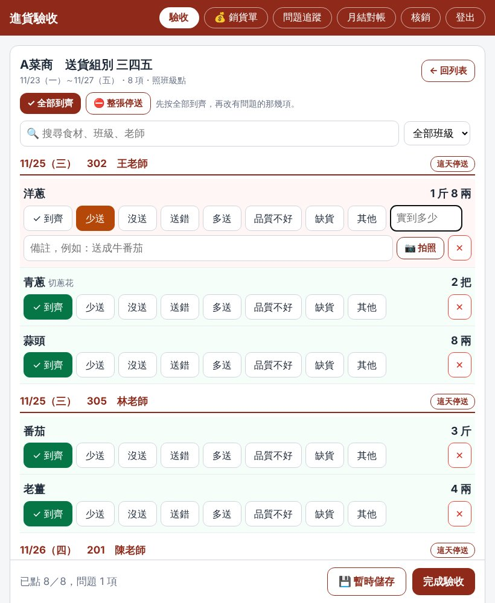

📋
照叫貨單點貨
直接帶出這次叫了什麼、每班多少，照順序點就好，不會漏。
貨送到時，拿平板照著叫貨單一項一項點。少送、送錯、品質不好當場標記、拍照留證；銷貨單拍照自動讀出金額，月底對帳一次搞定。
依你的工作流程量身打造，以下功能可以自由挑選
直接帶出這次叫了什麼、每班多少，照順序點就好，不會漏。
少送、沒送、送錯、多送、品質不好、缺貨都能標記，少送可以填實際到多少。
菜爛、肉不新鮮，當場拍照存到雲端，跟廠商反應有憑有據。
拍銷貨單，自動讀出品名、數量、單價、金額，對不起來會提醒。
驗收人在平板上簽名，簽名圖檔和驗收紀錄一起保存。
每家廠商每月自動加總，跟發票金額比對，差多少一看就知道。
畫面為示範資料，按播放觀看

畫面為示範資料，點圖片可放大
和訂貨系統用同一份資料。貨到時管理者用平板照叫貨單點貨，有問題當場標記、拍照；銷貨單拍照自動讀金額並更新單價表，月底自動和發票對帳，目前持續使用中。
聊聊你現在的工作方式和遇到的問題。
提出功能規劃與報價，確認後才開始。
過程中讓你試用，隨時調整。
完成交付並教你使用，提供售後維護。
不一定。搭配訂貨系統最方便（叫貨單自動帶入），也可以單獨使用，手動建立進貨清單。
印刷的銷貨單辨識比較準；手寫的可以用「手動填」，系統會先帶入叫貨數量和上次的單價，你只要改不一樣的地方。
手機、平板、電腦都能用；平板螢幕大、按鈕好點，最適合在現場點貨。
資料都存在 Google 試算表，可以直接匯出 Excel 或 PDF。
💬 建議優先加 LINE 留言，上班時間也收得到，通常 24 小時內回覆｜📍 高雄可約面談，全台線上服務